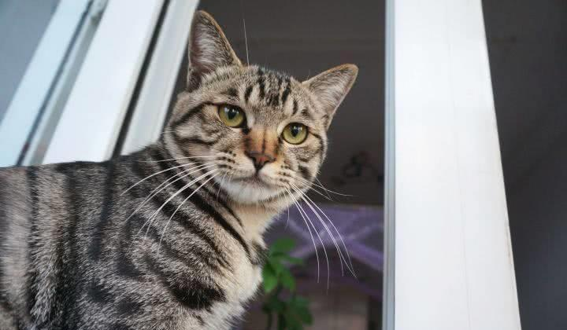
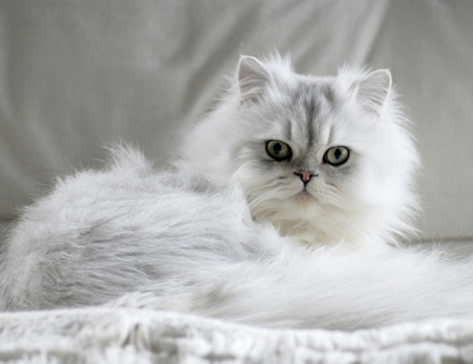
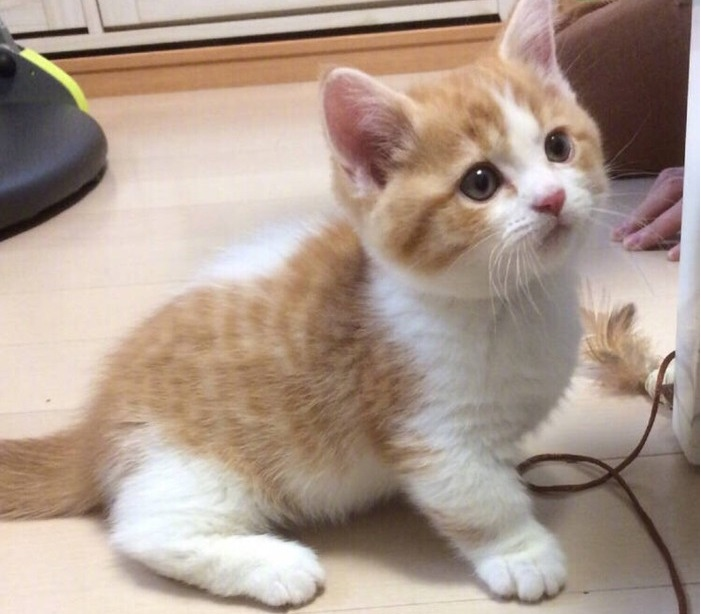
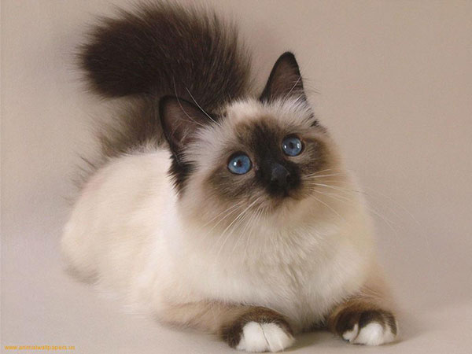
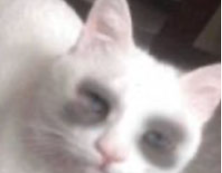

猫猫页面
猫猫页面

猫猫页面
cat page

白猫
白猫，简直就像是一只活生生的雪花从天空中飘落到了地面上。它的被毛纯白如雪，柔软而光滑，仿佛世界上最柔和的绒毛。白猫的眼睛大而明亮，呈现出一种深邃的蓝色，宛如两颗宝石般闪烁着智慧和好奇。
它的耳朵立起，时刻警惕着周围的一切声音，听觉敏锐。白猫的身材优美，身姿优雅，步履轻盈，仿佛随时都可以跃然而起。它的尾巴长而蓬松，时而招展开来，时而轻轻摆动，增添了一份优雅的氛围。
白猫的性格温和而亲人，喜欢被抚摸和拥抱。它与人互动时，常常用柔和的咕噜声表达喜悦和满足。这只白猫成为家庭的一员，给人们带来温馨和快乐，如同一团温暖的白色棉花，温暖了家中的每个角落。

狸花猫
狸花猫，也被称为三花猫，是一种常见的猫咪品种之一，以其独特的斑点和花纹而闻名。狸花猫通常具有中等到大型的体型，均匀分布在身体上的毛发呈现出狸花的斑点和色块，这些斑点通常由黑色、白色和棕色组成，呈现出一种美丽而复杂的外观。
狸花猫的脸部轮廓通常是标志性的，具有高颧骨和大而圆的眼睛，这些特征使它们看起来非常迷人。它们的眼睛可以呈现出各种颜色，包括蓝色、绿色、黄色等，这增添了它们的吸引力。
狸花猫性格温和，通常非常友好和亲人，喜欢与人类互动。它们具有活泼的性格，对玩耍和探索充满了兴趣，同时也会展现出聪明和好奇的一面。这使得狸花猫成为许多家庭的受欢迎宠物选择。
总的来说，狸花猫以其独特的外观和可爱的性格而受人喜爱，它们是一种迷人的猫咪品种，很容易成为家庭的一员。

长毛银渐层
长毛银渐层猫是一种令人陶醉的猫咪品种，以其华丽的外表和迷人的个性而著称。它们的长而丰盈的被毛是其最显著的特征，呈现出银色渐变的色彩，从根部逐渐过渡到深色的顶端，创造出一种独特的渐层效果。
长毛银渐层猫通常具有优美的体态，身体结构匀称，肌肉发达。其头部呈楔形，配有大而杏仁形的绿色或蓝色眼睛，显得非常迷人。耳朵较大，立起，尾巴长而蓬松，与其长被毛相得益彰。
这一品种的性格通常温和、亲人和友善。它们喜欢与人互动，对抚摸和拥抱非常喜欢，也容易与家庭成员建立亲密的关系。长毛银渐层猫通常聪明、好奇，喜欢玩耍和探索，但也能表现出它们的高雅和优雅。
由于其美丽的外表和温和的性格，长毛银渐层猫常常被认为是一种理想的宠物，适合与家庭一起生活。它们需要定期的毛发护理以保持其被毛的美丽，但这个额外的努力往往是值得的，因为这些猫咪不仅令人着迷，还充满了爱。

橘白小猫
橘白小猫是一种可爱的猫咪，以其鲜艳的橙色和纯白色的被毛而著名。它们通常是小巧而灵活的猫咪，拥有一双明亮而好奇的眼睛，眼睛颜色可能为黄色、绿色或橙色，增添了它们的吸引力。
橘白小猫的脸上通常有一个明显的橘色"面具"，这使得它们的表情看起来非常可爱和独特。它们的耳朵立起，尾巴通常是中等长度，呈现出一种轻松而自信的姿态。
这种猫咪通常性格温和、友好，充满好奇心，喜欢玩耍和探索。它们对人类充满亲和力，容易与家庭成员建立亲密的关系。橘白小猫可能会在家中的各个角落寻找有趣的东西，以娱乐自己和家人。
总的来说，橘白小猫以其可爱的外表和亲切的性格而受人喜爱，是一种受欢迎的宠物品种。它们往往成为家庭的一员，带来快乐和活力。

美短
美国短毛猫（American
Shorthair）是一种受欢迎的猫咪品种，以其稳重、友好的性格和短而浓密的被毛而著名。它们通常具有均匀分布的被毛，可以是各种不同的颜色和斑纹，但最典型的是银色或棕色的短毛。
美国短毛猫通常具有中等大小的体型，强壮的肌肉，坚固的骨骼结构和大而圆的眼睛。它们的脸部轮廓呈楔形，耳朵立起，尾巴中等长度，看起来非常精致和迷人。
性格上，美国短毛猫通常友好、温和，对家庭成员非常亲近。它们是非常聪明和好奇的猫咪，喜欢与人互动和玩耍，但也能够独立自主。这种猫咪品种适应性强，适合各种生活环境，从家庭到公寓都可以成为理想的宠物。
总的来说，美国短毛猫以其迷人的外表和亲人的性格而受人喜爱，它们是一种受欢迎的宠物，能够成为家庭的可爱伴侣。

逻辑猫
暹罗猫（Siamese
Cat）是一种非常著名的猫咪品种，以其独特的外貌和充满个性的性格而闻名。暹罗猫通常具有苗条的体型、长长的颈部，大而杏仁形的蓝色眼睛，以及短而光滑的被毛。
暹罗猫的被毛颜色通常呈现出浅色的身体和深色的面部、耳朵、尾巴和四肢，这被称为"点色"。这种颜色分布营造出一种迷人的外表，使暹罗猫在猫咪品种中独具特色。
性格上，暹罗猫通常非常亲人、社交和好奇。它们喜欢与人互动，喜欢嘈杂的环境，并表现出高度的智慧和好奇心。暹罗猫通常非常有主见，会发出响亮而多变的喉音，以表达自己的需求和情感。
总的来说，暹罗猫以其独特的外貌和亲人的性格而受人喜爱，它们是一种活泼、聪明的宠物，能够成为家庭的忠实伴侣。

程序猫
在代码的世界里，有一群特殊的猫咪，它们被戏称为"编程猫"。这些编程猫通常过着与众不同的生活，因为它们的生活节奏与大多数猫咪不同。它们的日常包括长时间坐在计算机前，头戴着编程眼镜，专心致志地解决各种代码问题。
有时候，编程猫们必须熬夜，灯光下，它们的眼睛闪烁着代码的光芒。它们耐心地跟踪和寻找那些隐藏得很深的错误，这些错误就像黑暗中的小老鼠一样，不断躲避编程猫的抓捕。
在夜深人静的时候，编程猫们与电脑为伴，不知疲倦地工作。它们的咖啡杯永远是满的，键盘上洒满了代码的痕迹。当终于找到并修复了那个顽固的
bug 时，编程猫们的脸上洋溢着满足和胜利的微笑。
尽管这是一项辛苦的工作，但编程猫们深爱着它们的编程使命。它们用自己的聪明才智，为数字世界增添了色彩和活力，因此，无论多晚，它们都会继续奋斗，直到所有
bug 被击败。